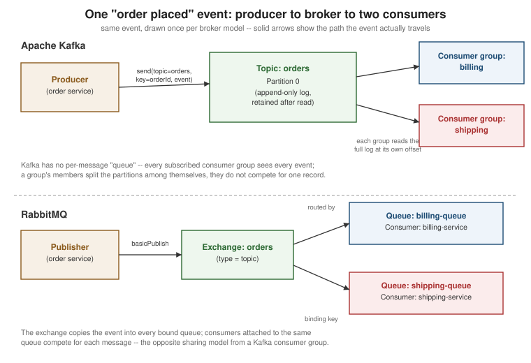

Getting Started with Messaging
|
This content was generated with the assistance of AI and should be verified against the official documentation before being relied on in production. |
Messaging is a style of communication where a sender hands a message to an intermediary — a broker, or in
some designs another process entirely — instead of calling the receiver directly and waiting for it to answer.
This page introduces why systems reach for messaging in the first place, how it differs from a direct
request/response call, the vocabulary Apache Kafka and RabbitMQ each use for the same underlying ideas, and one
complete first send/receive example against each broker’s plain Java client — no framework, no Spring Boot,
just kafka-clients and amqp-client. The rest of the Messaging reference builds on the vocabulary and examples
introduced here.
Why messaging instead of direct calls
A direct call — a REST request, a gRPC call, a plain method invocation across a network — ties the caller’s fate to the callee’s, for the whole duration of the call: the callee must be reachable right now, must answer fast enough, and if it is down, slow, or overloaded, the caller feels every bit of that immediately. Messaging exists to break that coupling, for five concrete, well-established reasons.
-
Guaranteed delivery. A message accepted by a durable broker survives the crash of either endpoint: if the consumer is down when the message arrives, the broker holds onto it and delivers it once the consumer comes back, instead of the message simply being lost the way an HTTP request to a downed server is lost unless the caller itself implements retries. A payment-confirmation email does not need to be sent within the same request that captured the payment — it needs to be sent eventually, reliably, even if the mail service is temporarily unreachable when the payment completes.
-
Decoupling. A producer does not need to know how many consumers exist, where they run, what language they are written in, or whether they are even online at the moment the message is sent. A new consumer can be added — a fraud-detection service starts listening to the same
ordersstream a fulfillment service already consumes — without a single line of the producer changing, because the producer was never calling the consumer to begin with. -
Scalability and high availability. A broker absorbs bursts a downstream service could not handle inline: a flash sale that spikes order volume 50x for ten minutes fills a queue or a topic’s partitions instead of overwhelming a checkout service’s thread pool. Multiple consumer instances can then either share that backlog (each processing a slice of it, for throughput) or run redundantly (so one instance’s crash does not stall processing), and either way the producer’s code is unaffected.
-
Asynchrony. The producer does not block waiting for the message to be processed — it hands the message to the broker and moves on, and the actual processing happens on the consumer’s own schedule, which may be milliseconds or minutes later. This is what makes "fire an event and continue" a fundamentally different latency profile from "call and wait for the response".
-
Interoperability. A message is a self-contained, language-agnostic payload (bytes plus headers), so a Java service, a Python service, and a legacy system in a completely different stack can all produce to and consume from the same broker without agreeing on a shared library, a shared runtime, or even a shared deployment schedule — only a shared message format and a shared broker protocol.
Synchronous, asynchronous, brokered, and brokerless
These five motivations explain why messaging exists, but they do not mean messaging is always the right tool — the choice is a genuine trade-off against direct request/response calls, and a further, separate choice of whether a broker sits in the middle at all.
Synchronous request/response: REST and gRPC
In a synchronous call — a REST call over HTTP, a gRPC call over HTTP/2 — the caller sends a request and blocks (or, in a reactive stack, suspends) until a response arrives on the same logical round-trip. This is the natural fit whenever the caller genuinely needs an answer before it can proceed: "is this credit card valid?", "what is this user’s current balance?", "did this write succeed?". Latency-sensitive, request-shaped interactions — anything a user is actively waiting on in a UI, or anything a subsequent step in the same operation depends on — belong here. The cost is exactly the coupling messaging exists to avoid: the caller cannot proceed until the callee answers, so the callee’s availability and latency become the caller’s availability and latency too.
Asynchronous messaging
In asynchronous messaging, the producer hands a message to a broker and returns immediately — an acknowledgement that the broker has the message, not that anyone has processed it. This fits throughput- and decoupling-sensitive work: "notify every interested service that an order was placed" has no single answer to wait for, may have zero, one, or many interested consumers, and does not need to hold up whatever workflow produced the event. It is a poor fit for anything the caller needs an immediate answer to, and it moves failure handling from "the HTTP call failed, retry it" to a broker-specific vocabulary of acknowledgements, redelivery, and dead-letter handling that this reference covers on later pages.
Brokered vs. brokerless messaging
Kafka and RabbitMQ are both brokered: a dedicated broker process sits between every producer and every consumer, owns storage and delivery, and neither side ever opens a connection directly to the other. This buys durability, fan-out to consumers that do not yet exist, and a single place to operate, secure, and observe message flow — at the cost of running (and depending on) that broker. A brokerless library such as ZeroMQ takes the opposite trade: producers and consumers connect to each other directly (ZeroMQ is a socket library, not a server), which removes the broker as an operational dependency and a potential bottleneck, at the cost of pushing peer discovery, buffering, and most delivery guarantees back onto the application. This page, and the rest of this Messaging reference, covers the brokered model — Kafka and RabbitMQ — exclusively.
Shared vocabulary: Kafka and RabbitMQ side by side
Kafka and RabbitMQ solve overlapping problems with genuinely different models underneath, so the same generic idea often has no exact equivalent on one side or the other. The table below is deliberately honest about that rather than forcing a false one-to-one mapping — later pages in this reference use each broker’s own column term, not the generic one, once the broker in question is clear from context.
| Generic term | Kafka | RabbitMQ |
|---|---|---|
Message / event / record |
Record — a key, a value, a timestamp, and headers, appended to a topic’s log. Often still called a "message" in prose. |
Message — a byte payload plus properties/headers, published to an exchange. |
Producer |
Producer — writes records to a topic. |
Publisher — publishes messages to an exchange. Often still called a "producer" in prose; the client API’s
own name is |
Consumer |
Consumer — reads records from a topic, tracking its own offset. |
Consumer — registered against a queue with |
Broker |
Broker — a single Kafka server process; a cluster is many brokers. |
Broker — a single RabbitMQ node; a cluster is many nodes. |
Channel |
No first-class concept — a client multiplexes requests over a small number of raw TCP connections managed
internally by |
Channel — a lightweight virtual connection multiplexed over one real TCP connection; almost every AMQP
client operation ( |
Queue |
No queue concept — see Topic below; the closest analogue is a topic’s partition, which is an ordered log, not a queue that removes items once read. |
Queue — the actual buffer a message sits in until a consumer acknowledges it; this is where messages are stored and where competing consumers pull from. |
Topic |
Topic — a named, partitioned, append-only log. Consuming from a topic does not remove records from it; many independent consumer groups can each read the same topic at their own pace and offset. |
Topic exchange — a specific exchange type that routes a message to bound queues by matching its routing
key against each binding’s pattern ( |
Acknowledgement |
Two distinct acks: a producer ack ( |
An explicit |
Offset |
Offset — a per-partition, monotonically increasing position a consumer tracks and commits explicitly; a consumer can rewind to an earlier offset and re-read history. |
No offset concept — once a message is acknowledged and removed from a queue it is gone; there is no position to rewind to and replay from. |
Routing key |
No routing key — a producer picks a partition directly, or lets one be chosen by hashing the record key. |
Routing key — a value published alongside the message that an exchange matches against each queue’s binding key to decide which queue(s), if any, receive a copy. |
Running a broker locally
Both brokers below can be started with a single docker run command and no further configuration, which is the
fastest way to try the client examples that follow (the command’s options are explained in
Running Containers).
Apache Kafka
Since Kafka 3.3, a broker can run entirely on KRaft (Kafka’s own Raft-based metadata quorum), with no separate
ZooKeeper process to run alongside it. The official apache/kafka image is pre-configured to start a single-node
KRaft broker (acting as both broker and controller) the moment the container starts:
docker run -p 9092:9092 apache/kafka:latestPin apache/kafka:latest to the specific released version tag shown on the page below for a reproducible setup;
the Kafka quickstart walks this same command and the topic-creation and console-producer/consumer steps that
follow it.
See Apache Kafka — Quickstart for the full walkthrough this command is
taken from.
RabbitMQ
The rabbitmq:4-management image bundles the community-supported management plugin, which serves a web UI (and
an HTTP API) for inspecting exchanges, queues, and connections — useful the first time through, even though the
Java examples below only need the plain AMQP port:
docker run -it --rm --name rabbitmq -p 5672:5672 -p 15672:15672 rabbitmq:4-managementPort 5672 is the AMQP 0-9-1 protocol port the Java client below connects to; port 15672 serves the
management UI at http://localhost:15672 (default credentials guest/guest, valid only for connections from
localhost).
See RabbitMQ — Downloading and installing RabbitMQ for the supported
image tags and installation options this command is drawn from.
A first producer and consumer
Both examples below send and receive the same "order placed" event using nothing but each broker’s plain Java
client — org.apache.kafka:kafka-clients for Kafka, com.rabbitmq.client:amqp-client for RabbitMQ. Neither
example depends on Spring or any other framework; that integration is covered separately, on
Messaging with SmallRye Reactive Messaging for Quarkus.
Kafka: KafkaProducer and KafkaConsumer
package com.example.messaging.kafka;
import java.util.Properties;
import org.apache.kafka.clients.producer.KafkaProducer;
import org.apache.kafka.clients.producer.Producer;
import org.apache.kafka.clients.producer.ProducerRecord;
public class OrderPlacedProducer {
public static void main(String[] args) {
Properties props = new Properties();
props.put("bootstrap.servers", "localhost:9092");
props.put("key.serializer", "org.apache.kafka.common.serialization.StringSerializer");
props.put("value.serializer", "org.apache.kafka.common.serialization.StringSerializer");
try (Producer<String, String> producer = new KafkaProducer<>(props)) {
String orderId = "order-42";
producer.send(new ProducerRecord<>("orders", orderId, "order placed: " + orderId));
}
}
}bootstrap.servers is the only address the client needs — it discovers the rest of the cluster from there; the
key/value serializers convert the typed record into bytes before the record is sent.
See Apache Kafka documentation — Producer API for the full
configuration reference and Producer/ProducerRecord API this example is built from.
package com.example.messaging.kafka;
import java.time.Duration;
import java.util.Collections;
import java.util.Properties;
import org.apache.kafka.clients.consumer.ConsumerRecord;
import org.apache.kafka.clients.consumer.ConsumerRecords;
import org.apache.kafka.clients.consumer.KafkaConsumer;
public class OrderPlacedConsumer {
public static void main(String[] args) {
Properties props = new Properties();
props.put("bootstrap.servers", "localhost:9092");
props.put("group.id", "billing-service");
props.put("key.deserializer", "org.apache.kafka.common.serialization.StringDeserializer");
props.put("value.deserializer", "org.apache.kafka.common.serialization.StringDeserializer");
try (KafkaConsumer<String, String> consumer = new KafkaConsumer<>(props)) {
consumer.subscribe(Collections.singletonList("orders"));
while (true) {
ConsumerRecords<String, String> records = consumer.poll(Duration.ofMillis(100));
for (ConsumerRecord<String, String> record : records) {
System.out.printf("offset = %d, key = %s, value = %s%n",
record.offset(), record.key(), record.value());
}
}
}
}
}group.id is what makes this a member of the billing-service consumer group — every consumer sharing that
group id splits the orders topic’s partitions among themselves, while a different group id started elsewhere
would independently receive every record again from its own offset. poll is the call that actually fetches
records and must be called repeatedly; nothing arrives on its own.
See Apache Kafka documentation — Consumer API for the full
configuration reference and KafkaConsumer/ConsumerRecords API this example is built from.
RabbitMQ: Channel, basicPublish, and basicConsume
package com.example.messaging.rabbitmq;
import java.util.Map;
import com.rabbitmq.client.Channel;
import com.rabbitmq.client.Connection;
import com.rabbitmq.client.ConnectionFactory;
public class OrderPlacedPublisher {
private static final String QUEUE_NAME = "orders";
public static void main(String[] args) throws Exception {
ConnectionFactory factory = new ConnectionFactory();
factory.setHost("localhost");
try (Connection connection = factory.newConnection();
Channel channel = connection.createChannel()) {
Map<String, Object> args2 = Map.of("x-queue-type", "quorum");
channel.queueDeclare(QUEUE_NAME, true, false, false, args2);
String message = "order placed: order-42";
channel.basicPublish("", QUEUE_NAME, null, message.getBytes());
System.out.println(" [x] Sent '" + message + "'");
}
}
}queueDeclare is idempotent — it creates the queue the first time and is a harmless no-op on every later run,
as long as the arguments match; x-queue-type=quorum requests a quorum queue, RabbitMQ’s currently
recommended replicated queue type for durability. basicPublish with an empty exchange name ("") publishes
directly to the queue named by the routing key, using the AMQP default exchange.
See RabbitMQ tutorials — "Hello World!" in Java for the
full walkthrough this example is adapted from.
package com.example.messaging.rabbitmq;
import java.util.Map;
import com.rabbitmq.client.Channel;
import com.rabbitmq.client.Connection;
import com.rabbitmq.client.ConnectionFactory;
import com.rabbitmq.client.DeliverCallback;
public class OrderPlacedConsumer {
private static final String QUEUE_NAME = "orders";
public static void main(String[] args) throws Exception {
ConnectionFactory factory = new ConnectionFactory();
factory.setHost("localhost");
Connection connection = factory.newConnection();
Channel channel = connection.createChannel();
Map<String, Object> args2 = Map.of("x-queue-type", "quorum");
channel.queueDeclare(QUEUE_NAME, true, false, false, args2);
System.out.println(" [*] Waiting for messages. To exit press CTRL+C");
DeliverCallback deliverCallback = (consumerTag, delivery) -> {
String message = new String(delivery.getBody(), "UTF-8");
System.out.println(" [x] Received '" + message + "'");
};
channel.basicConsume(QUEUE_NAME, true, deliverCallback, consumerTag -> { });
}
}basicConsume’s third boolean argument is `autoAck — true here acknowledges each delivery automatically the
moment it is handed to the callback, which is the simplest option and matches the Kafka example’s default
enable.auto.commit; manual acknowledgement (autoAck=false plus an explicit channel.basicAck(…) inside the
callback) is what a consumer that must not lose a message on a mid-processing crash uses instead, and is covered
on a later page in this reference.
See RabbitMQ tutorials — "Hello World!" in Java for the
full walkthrough this example is adapted from.
One event, two brokers, two consumers
The figure below draws the same "order placed" event traveling from a producer, through a broker, to two consumers — once for Kafka, once for RabbitMQ — to make the vocabulary table above concrete. The two halves also make the sharing-model difference explicit: Kafka’s two consumer groups each receive their own independent copy of every event, while RabbitMQ’s two queues each receive their own copy only because the exchange is configured to route to both — if both consumers instead shared a single queue, they would compete for each message rather than both seeing it.
